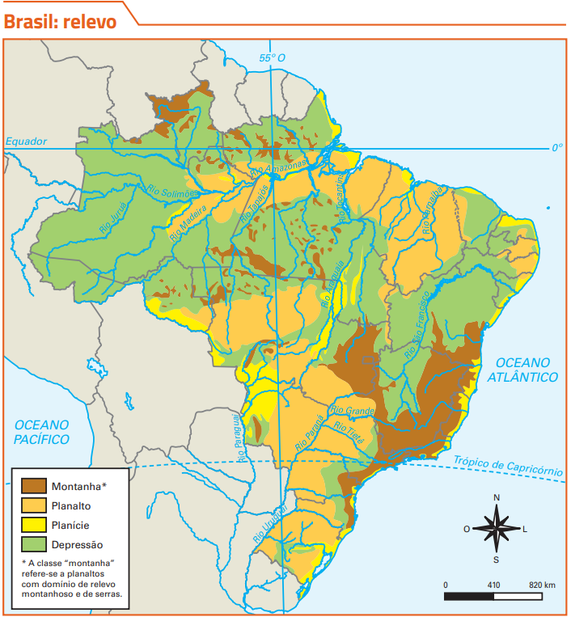

• Montanhas são formas de relevo com altitudes elevadas, sendo os pontos mais altos do planeta. No Brasil, não há montanhas, apenas serras, que são formações de menor altitude.
• Planaltos são formas de relevo com superfícies planas, mas acidentadas e irregulares. Nas bordas, é comum encontrar elevações de topo plano, como serras.
• Planícies são formas de relevo recentes, localizadas em áreas de baixa altitude, próximas ao nível do mar. Suas superfícies são planas e pouco acidentadas, formadas pelo acúmulo de sedimentos de áreas mais elevadas ao redor.
• Depressões são formas de relevo rebaixadas, com altitudes entre 100 m e 500 m. Podem ser classificadas como relativas (mais baixas que o entorno) ou absolutas (abaixo do nível do mar).
